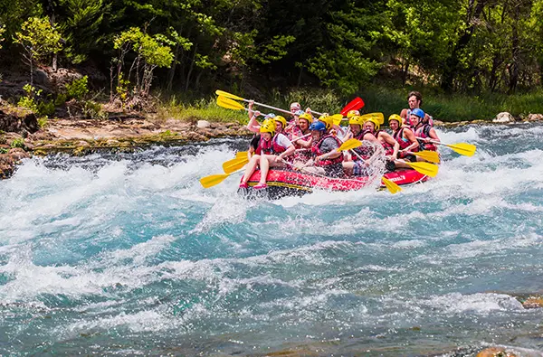

Ride the thrill. Conquer the Rapids.
Welcome to the about us page! Here you can get to know us.
Welcome to the about us page! Here you can get to know us.
Born from a group of explorers who discovered an untamed river in the Andes, Rapids Rafting was founded on the thrill of adventure. Our mission? To bring you the excitement of wild waters and heart-pounding rapids, all while surrounded by nature’s beauty. Whether you're a seasoned pro or a first-timer, Rapids Rafting offers the ultimate river experience. Join us, and feel the rush!

Some adventurers!
We love our tourists!

The rapids of the river.

The view is amazing!

Will you take the challenge?